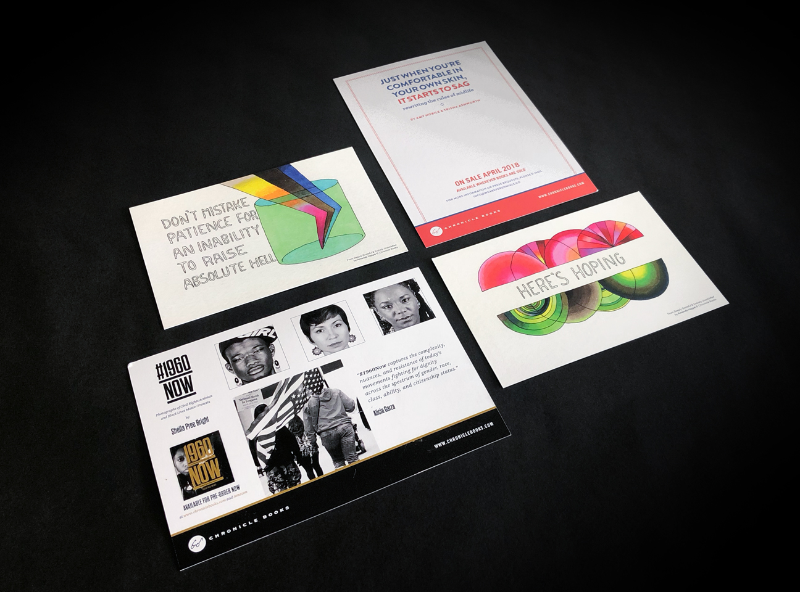

Chronicle Books Marketing
Marketing material for local San Francisco publishing company Chronicle Books.
As a marketing and communications designer for
Chronicle Books , I assisted the marketing team with designing a flurry of promotion material for books new and old. Print material ranged from postcards and posters to signage and displays for Chronicle's retail stores.
Digitally, I assisted the MARCOM team in creating graphics for promotional videos and standard web ads. I enjoyed being able to design such a wide variety of applications and better yet, getting the opportunity to absorb as much as I could about the publishing industry.

I've witnessed Chronicle's marketing team push through publishing, design, and marketing challenges with thoughtfullness and tenacity! It was great to get an insight on the publishing industry, especially since Chronicle is one of the very few publishers that continue to push thoughtful and progressive content into the book industry pumping more life into print.